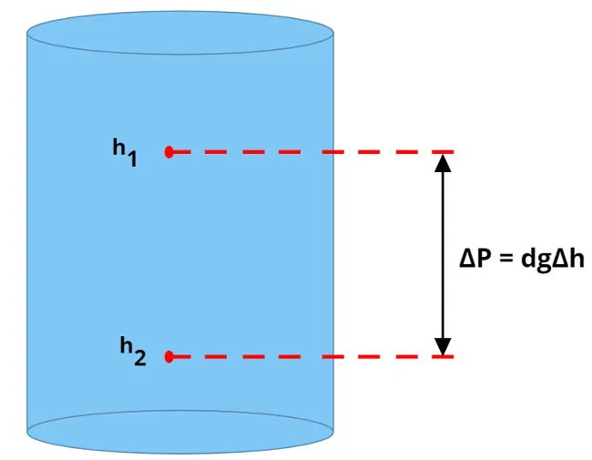
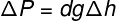
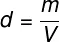
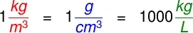
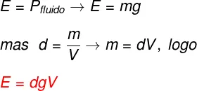
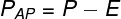

"A Hidrostática é area da Física que estuda as propriedades dos fluidos em repouso. Entre as propriedades físicas dos fluidos, podemos destacar como as mais importantes: densidade, pressão e força de empuxo. Entendemos como fluidos as substâncias capazes de assumir o formato de seu recipiente, mudando sua forma sob a ação de alguma força externa.
A densidade é um parâmetro importante, já que essa propriedade mede a quantidade de matéria que um fluido apresenta em um determinado espaço. Segundo o Sistema Internacional de Unidades (SI), a densidade de um fluido é medida em quilogramas por metro cúbico (kg/m³).
A pressão hidrostática mede a força por unidade de área que um fluido em repouso é capaz de exercer contra uma superfície. Quanto maior for a profundidade de um corpo imerso em um fluido, maior será a pressão exercida sobre ele. A unidade de pressão no SI é o pascal (Pa), que equivale à pressão de 1 newton por metro quadrado (N/m²).
O empuxo, por sua vez, é a força que todo fluido exerce sobre os corpos nele imersos. A força de empuxo é responsável por expelir as bolhas de gás de bebidas gaseificadas. Além disso, faz com que uma cortiça, um navio ou um cubo de gelo flutue sobre a água. A força de empuxo é descrita pelo Teorema de Arquimedes, e sua unidade é o newton (N)."
"Pressão hidrostática"
"A pressão hidrostática é a pressão exercida por uma coluna de fluido em repouso. Para calcularmos o módulo da pressão hidrostática exercida por um fluido, utilizamos o princípio fundamental da Hidrostática:"
"A diferença de pressão entre dois pontos de um fluido é determinada pelo produto entre sua densidade, o módulo da gravidade local e a diferença de altura entre esses pontos."

"Podemos traduzir o princípio fundamental da Hidrodinâmica na seguinte equação:"

"ΔP – diferença de pressão (Pa)
d – densidade do fluido (kg/m³)
Δh – diferença de altura entre pontos do fluido (m)"
"Uma análise cuidadosa do princípio apresentado acima permite-nos concluir que:
Dois pontos que se encontram à mesma altura em um fluido apresentarão a mesma pressão;
Todo fluido em equilíbrio apresenta sua superfície livre disposta na direção horizontal;
A pressão em um fluido aumenta com sua profundidade."
"Teorema de Pascal e pressão"
"De acordo com o teorema de Pascal, todo o aumento de pressão sobre um fluido ideal, isto é, um fluido não compressível, contínuo e sem viscosidade, é transmitido homogeneamente ao longo de seu volume. Uma das aplicações do princípio de Pascal é no funcionamento das prensas e pistões hidráulicos."
"Hidrostática e densidade"
"A densidade é uma das mais importantes propriedades de um fluido. Por meio dela, é possível determinar a quantidade de matéria que constitui um fluido em um determinado volume. A definição de densidade é apresentada abaixo:"

"A densidade de um fluido é medida com base na densidade da água pura, cujo módulo é de 1,0 quilograma por metro cúbico. Existem diversas unidades de densidade comumente usadas no estudo da Hidrostática. Confira na figura abaixo algumas delas e aproveite para aprender a realizar conversões de unidade quando for necessário:

"Empuxo e Hidrostática"
"Quando inserido no interior de um fluido, um corpo ocupa parte do espaço que anteriormente era ocupado pelo próprio fluido. Assim, o fluido exercerá sobre esse objeto uma força direcionada para cima de módulo igual ao peso do fluido que fora deslocado em razão da inserção do corpo em seu interior."
"A definição apresentada acima foi desenvolvida por Arquimedes de Siracusa, um importante matemático, inventor e físico grego. Seu enunciado original é apresentado abaixo:"
""Todo corpo mergulhado em um fluido em repouso sofre, por parte do fluido, uma força vertical para cima, cuja intensidade é igual ao peso do fluido deslocado pelo corpo.""
"O módulo da força de empuxo pode ser calculado por meio da seguinte definição:"

"O empuxo exercido por um fluido não dependerá, portanto, do peso do corpo ou de sua densidade, mas sim da densidade do fluido, da gravidade local e do volume de fluido deslocado, que, por sinal, é igual ao volume da porção do corpo que se encontra imerso no fluido.
Apesar de o empuxo não ser determinado pela densidade do corpo, por meio da relação entre as densidades do corpo e do fluido, é possível sabermos se o corpo flutuará, permanecerá em equilíbrio ou submergirá. Observe:
Se o corpo for mais denso que o fundo, ele tenderá a afundar;
Se o corpo apresentar uma densidade próxima à do fluido, ele tenderá a permanecer em equilíbrio;
Se o corpo tiver densidade menor que a densidade do fluido, ele tenderá a flutuar."
"Peso aparente"
"Peso aparente é a resultante das forças peso e empuxo que agem sobre um corpo inserido em um fluido. Quando imerso em fluido, o corpo parecerá mais “leve” do que realmente é. Isso ocorre porque a força de empuxo atua sobre esse corpo na direção vertical, apontando sempre para cima.
O peso aparente pode ser calculado da seguinte forma:"

"PAP – peso aparente (N)
P – peso do corpo (N)
E – empuxo sobre o corpo (N)"